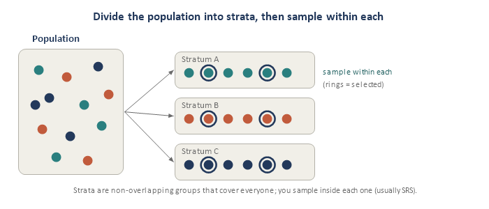
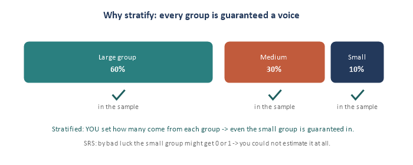
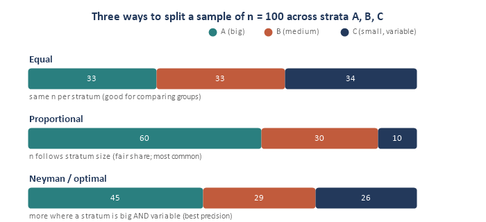
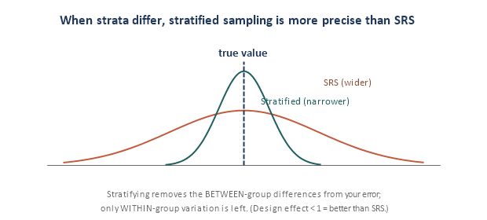

Module 3: Stratified Sampling
Sampling Refresher · sampling on purpose, group by group
Module 2 gave you implicit stratification (even spread for free). Stratified sampling is the deliberate version: split the population into meaningful groups and sample within each on purpose. It is one of the most useful designs in real survey work, and it introduces a new decision — allocation — for how many units to take from each group. Four pieces.
Piece 1 — What stratified sampling is
Split the population into strata — non-overlapping groups that together cover everyone — then draw a sample within each stratum (usually an SRS inside each). Finally, combine the stratum results into one overall estimate.

The catch on defining strata: you must know each unit’s group for everyone on the frame before you sample — so strata are built from information you already have (age band, sex, region, school, customer tier). Good strata are similar inside and different from each other.
Piece 2 — Why stratify
Two big payoffs:
- Guaranteed representation. You decide how many come from each group, so every group — even a small one — is certain to appear. That also lets you report reliable estimates for each subgroup, not just the whole.
- Precision. If strata are internally similar but differ from each other, stratifying removes that between-group difference from your error — so your estimate is tighter than SRS for the same n.

Piece 3 — Allocation (how many from each stratum)
Once you fix the total sample size n, you must split it across the strata. Three standard schemes:
- Equal: the same n in every stratum. Good when you want to compare strata; it over-samples small ones.
- Proportional: n_h = n * (N_h / N) — each stratum’s share matches its size. Fair, self-weighting, and the most common default.
- Neyman / optimal: n_h is proportional to (N_h * S_h) — put more sample where a stratum is both big and variable. This gives the best precision for a fixed n. (With differing costs, divide by the square root of cost.)

Terminology: proportional allocation is “proportionate”; equal and Neyman are “disproportionate” (some groups are over- or under-sampled, so you need weights to combine them fairly — a preview of Module 6). Tiny example: strata of size 600 / 300 / 100 (N = 1,000), with n = 100. Proportional allocation takes 60 / 30 / 10.
Piece 4 — How much precision you gain
The overall estimate is a weighted average of the stratum means, with weights equal to the stratum shares (N_h / N). The precision win comes from a simple fact:
stratified error uses only WITHIN-stratum variation — the BETWEEN-stratum differences are removed

So the more your strata differ from each other (and the more homogeneous each is inside), the bigger the gain. The size of that gain is captured by the design effect (Module 4): a value below 1 means “better than SRS.” With proportional allocation, stratified sampling is essentially never worse than SRS — a rare free lunch, as long as you have a good stratifying variable known for the whole frame.
How this comes up in practice
- “Why stratify?” Guaranteed representation of every group (and subgroup estimates), plus better precision when strata differ.
- “Proportional vs. Neyman allocation?” Proportional splits n by stratum size; Neyman also weights by variability, putting more sample where a stratum is both big and variable.
- “When does stratification help most?” When strata are homogeneous within and very different between.
Quick check
- For big precision gains, should strata be similar or different from each other?
- Strata of size 600 / 300 / 100 and n = 100 with proportional allocation — how many from each?
- Which allocation puts more sample where a stratum is both big and variable?
- In one line, why is stratified sampling often more precise than SRS?